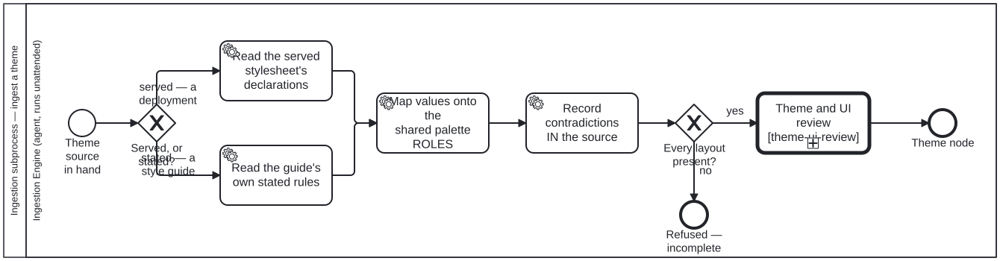

Generated from
cat-harness/processes/ui/ingest-theme.bpmnbygen-processes-viz.ts— do not edit here. All processes
Ingestion subprocess — ingest a theme
Process_IngestTheme · advisory · 5 step(s)
Decide whether an ingested artefact is a theme source and, when it is, extract its palette roles and layouts and send them to theme and UI review. folio-assistant — Ingestion subprocess — ingest a theme.
Source of truth: this file. Open it in bpmn.io, Camunda Modeler, or any other
BPMN 2.0 tool. The SVG under docs/assets/img/workflows/ is generated from it
by bun run cat render:bpmn — never hand-edit the SVG.
The
Bean j66n. One Theme node with kind sticky | webpage | publication, not three node kinds: the palette vocabulary is shared and only the GEOMETRY varies.

How it connects
- Called by: L1 document ingestion — a document to the L1 source knowledge graph
- Calls: Theme and UI review — at ingestion
- Presented on: Document ingestion — Ingest the theme
Lanes — who acts
| lane | role | what it does here |
|---|---|---|
| Ingestion Engine (agent, runs unattended) | ingestion-agent | Every step in this diagram is this lane’s, and each treats the source as evidence to be recorded rather than resolved: contradictions in the source are kept as data rather than silently picked, values the source is silent on are marked as a choice rather than dressed up as a measurement, and a missing layout ends in refusal rather than a theme quietly degraded to the ones that were supplied. |
Steps
Every one of the 5 step(s) is documented.
| step | lane | skill / sub-process | what it does |
|---|---|---|---|
Read the served stylesheet’s declarationsTask_ReadStylesheet | Ingestion Engine (agent, runs unattended) | theme-art-intake | Read the ROLE, never the prettiest value. Bootstrap’s –blue is a scale entry and –primary is the role; DSpace sets them differently, and taking the brand-looking one is the hardcoding schemas/theme.ts exists to end. Column widths come from declared columns, never from breakpoints: a breakpoint is a viewport. |
Read the guide’s own stated rulesTask_ReadGuide | Ingestion Engine (agent, runs unattended) | theme-art-intake | From the INGESTED document’s sections, not from a screenshot and not inferred from a site that happens to use the brand. Units stay as the source gives them: rewriting 29.7cm as millimetres is a conversion nobody asked for and a chance to be wrong. |
Map values onto the shared palette ROLESTask_MapRoles | Ingestion Engine (agent, runs unattended) | theme-art-intake | surface / ink / edge / accent, shared across every kind. A palette per kind would be three spellings of “accent colour”, free to disagree about what an accent IS. Where the source is SILENT on a role, say so and mark the value a choice rather than dressing an invention as a measurement. |
Record contradictions IN the sourceTask_Contradictions | Ingestion Engine (agent, runs unattended) | theme-art-intake | A step because it happened twice on the first real ingestion: the WHO guide states its black logo as both K:100 and R:100 G:100 B:100, and gives the logo blue as C:95 on page 6 and C:90 on page 12. A contradiction silently resolved is indistinguishable from one nobody noticed, so it is kept as data and the reading taken is stated as a choice. |
Theme and UI reviewTask_Review | Ingestion Engine (agent, runs unattended) | calls Theme and UI review — at ingestiontheme-ui-review | THEME REVIEW HAPPENS HERE AND NOWHERE ELSE. Owner, 2026-09-23: “theme review to ingestion of graphical assets in context of website or app design and determining graphical assets/UI”; asked directly on 2026-09-24 whether that meant ONLY at ingestion: “Yes only at ingestion”. Bean 9fdi.So this step now CALLS theme-ui-review.bpmn rather than performing one automated check out of it. Until 2026-09-24 it carried a folio:no-call reason — “calling it would put a human gate into an automated ingest” — and the review ran post-MVP from crdm-deliver.bpmn instead. That call is gone, and the reason for not calling is withdrawn rather than left standing beside a call it contradicts.WHAT THE CALL COSTS, stated rather than hidden. The subprocess has a human step, R_Judge: a person looks at the ingested assets laid out in their design at a web and a mobile width. So ingesting a THEME SOURCE is attended at that step. Ingesting anything else stays unattended — Gateway_ThemeSource in document-ingestion.bpmn routes non-theme documents past this subprocess entirely.THE OLD AUTOMATED CHECK IS INSIDE THE CALL, NOT DROPPED. “A theme sets the stripe’s hue; it never sets its width to zero” — colour alone carrying a whole signal fails WCAG SC 1.4.1, and the WHO guide agrees (“Never red with green, never blue with yellow”). That check is A_Accessibility in the called process, which measures contrast against the real ground and requires a non-colour channel wherever colour carries meaning. |
Decisions
Every one of the 2 decision(s) is documented.
| decision | what decides it | branches |
|---|---|---|
Served, or stated?Gateway_Kind | The ONE difference between the two paths. A deployed site SERVES its theme as a compiled stylesheet; a style guide STATES its rules as prose and swatches. Everything after the join is shared. | served — a deployment → Read the served stylesheet’s declarations stated — a style guide → Read the guide’s own stated rules |
Every layout present?Gateway_Layouts | Is every layout the theme must cover present in the source? yes goes on to the contrast and non-colour review; no refuses the theme as incomplete rather than filling the gap by guessing. | yes → Theme and UI review no → Refused — incomplete |